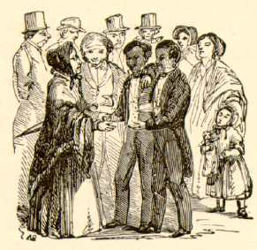

| [This comic sketch first appeared in Packard's Monthly in August, 1869, making it the earliest of MT's imaginative engagements with the idea of two linked but incompatible selves. It was frequently reprinted during MT's time. The illustrations included here are by True Williams, and were drawn when the piece was included in Mark Twain's Sketches, Old and New (1875).] |
Personal Habits of the Siamese TwinsThe Siamese Twins are naturally tender and affectionate in disposition, and have clung to each other with singular fidelity throughout a long and eventful life. Even as children they were inseparable companions; and it was noticed that they always seemed to prefer each other's society to that of any other persons. They nearly always played together; and, so accustomed was their mother to this peculiarity, that, whenever both of them chance to be lost, she usually only hunted for one of them--satisfied that when she found that one she would find his brother somewhere in the immediate neighborhood. And yet these creatures were ignorant and unlettered--barbarians themselves and the offspring of barbarians, who knew not the light of philosophy and science. What a withering rebuke is this to our boasted civilization, with its quarrelings, its wrangling, and its separations of brothers! As men, the Twins have not always lived in perfect accord; but, still, there has always been a bond between them which made them unwilling to go away from each other and dwell apart. They have even occupied the same house, as a general thing, and it is believed that they have never failed to even sleep together on any night since they were born. How surely do the habits of a lifetime become second nature to us! The Twins always go to bed at the same time; but Chang usually gets up about an hour before his brother. By an understanding between themselves, Chang does all the in-door work and Eng runs all the errands. This is because Eng likes to go out; Chang's habits are sedentary. However, Chang always goes along. Eng is a Baptist, but Chang is a Roman Catholic; still, to please his brother, Chang consented to be baptized at the same time that Eng was, on condition that it should not "count." During the War they were strong partisans, and both fought gallantly all through the great struggle--Eng on the Union side and Chang on the Confederate. They took each other prisoners at Seven Oaks, but the proofs of capture were so evenly balanced in favor of each that a general army court had to be assembled to determine which one was properly the captor and which the captive. The jury was unable to agree for a long time; but the vexed question was finally decided by agreeing to consider them both prisoners, and then exchanging them. At one time Chang was convicted of disobedience of orders, and sentenced to ten days in the guard house; but Eng, in spite of all arguments, felt obliged to share his imprisonment, notwithstanding he himself was entirely innocent; and so, to save the blameless brother from suffering, they had to discharge both from custody--the just reward of faithfulness. Upon one occasion the brothers fell out about something, and Chang knocked Eng down, and then tripped and fell on him, whereupon both clinched and began to beat and gouge each other without mercy. The bystanders interfered and tried to separate them, but they could not do it, and so allowed them to fight it out. In the end both were disabled, and were carried to the hospital on one and the same shutter. Their ancient habit of going always together had its drawbacks when they reached man's estate and entered upon the luxury of courting. Both fell in love with the same girl. Each tried to steal clandestine interviews with her, but at the critical moment the other would always turn up. By-and bye Eng saw, with distraction, that Chang had won the girl's affections; and, from that day forth, he had to bear with the agony of being a witness to all their dainty billing and cooing. But, with a magnanimity that did him infinite credit, he succumbed to his fate, and gave countenance and encouragement to a state of things that bade fair to sunder his generous heart-strings. He sat from seven every evening until two in the morning listening to the fond foolishness of the two lovers, and to the concussion of hundreds of squandered kisses--for the privilege of sharing only one of which he would have given his right hand. But he sat patiently, and waited, and gaped, and yawned, and stretched, and longed for two o'clock to come. And he took long walks with the lovers on moonlight evenings--sometimes traversing ten miles, notwithstanding he was usually suffering from rheumatism. He is an inveterate smoker; but he could not smoke on these occasions, because the young lady was painfully sensitive to the smell of tobacco. Eng cordially wanted them married, and done with it; but, although Chang often asked the momentous question, the young lady could not gather sufficient courage to answer it while Eng was by. However, on one occasion, after having walked some sixteen miles, and sat up till nearly daylight, Eng dropped asleep, from sheer exhaustion, and then the question was asked and answered. The lovers were married. All acquainted with the circumstances applauded the noble brother-in-law. His unwavering faithfulness was the theme of every tongue. He had staid by them all through their long and arduous courtship; and when, at last, they were married, he lifted his hands above their heads, and said with impressive unction, "Bless ye, my children, I will never desert ye!" and he kept his word. Magnanimity like this is all too rare in this cold world. By-and-bye Eng fell in love with his sister-in-law's sister, and married her, and since that day they have all lived together, night and day, in an exceeding sociability which is touching and beautiful to behold, and is a scathing rebuke to our boasted civilization.  The sympathy existing between these two brothers is so close and so refined that the feelings, the impulses, the emotions of the one are instantly experienced by the other. When one is sick, the other is sick; when one feels pain, the other feels it; when one is angered, the other's temper takes fire. We have already seen with what happy facility they both fell in love with the same girl. Now, Chang is bitterly opposed to all forms of intemperance, on principle; but Eng is the reverse--for, while these men's feelings and emotions are so closely wedded, their reasoning faculties are unfettered; their thoughts are free. Chang belongs to the Good Templars, and is a hard-working and enthusiastic supporter of all temperance reforms. But, to his bitter distress, every now and then Eng gets drunk, and, of course, that makes Chang drunk too. This unfortunate thing has been a great sorrow to Chang, for it almost destroys his usefulness in his favorite field of effort. As sure as he is to head a great temperance procession Eng ranges up alongside of him, prompt to the minute and drunk as a lord; but yet no more dismally and hopelessly drunk than his brother who has not tasted a drop. And so the two begin to hoot and yell, and throw mud and bricks at the Good Templars; and, of course, they break up the procession. It would be manifestly wrong to punish Chang for what Eng does, and, therefore, the Good Templars accept the untoward situation, and suffer in silence and sorrow. They have officially and deliberately examined into the matter, and find Chang blameless. They have taken the two brothers and filled Chang full of warm water and sugar and Eng full of whiskey, and in twenty-five minutes it was not possible to tell which was the drunkest. Both were as drunk as loons--and on hot whiskey punches, by the smell of their breath. Yet all the while Chang's moral principles were unsullied, his conscience clear; and so all just men were forced to confess that he was not morally, but only physically drunk. By every right and by every moral evidence the man was strictly sober; and, therefore, it caused his friends all the more anguish to see him shake hands with the pump and try to wind his watch with his night-key. There is a moral in these solemn warnings--or, at least, a warning in these solemn morals; one or the other. No matter, it is somehow. Let us heed it; let us profit by it. I could say more of an instructive nature about these interesting beings, but let what I have written suffice. Having forgotten to mention it sooner, I will remark, in conclusion, that the ages of the Siamese Twins are respectively fifty-one and fifty-three years. --August 1869 |